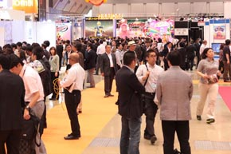

- 2012/6/16
- 【一般公開】会場の様子を公開しました。
- 2012/6/14
- 【商談見本市】会場の様子を公開しました。
- 2012/6/12
- 【商談見本市】受注キャンペーンを更新しました。
- 2012/6/12
- 【一般公開】出展社のイベント情報ページを更新しました。
- 2012/6/5
- 【商談見本市】受注キャンペーンを更新しました。
- 2012/6/5
- 【一般公開】出展社のイベント情報ページを更新しました。
- 2012/5/29
- 【商談見本市】受注キャンペーンを更新しました。
- 2012/5/29
- 【一般公開】出展社のイベント情報ページを更新しました。
- 2012/5/22
- 【一般公開】キッズパークページがオープンしました。
- 2012/5/16
- 【商談見本市】来場者登録証ダウンロードページがオープンしました。
- 2012/5/16
- 【商談見本市】受注キャンペーンページがオープンしました。
- 2012/5/16
- 【一般公開】出展社のイベント情報ページがオープンしました。
- 2012/5/11
- 【一般公開】ステージショーページがオープンしました。
- 2012/4/23
- 出展社一覧・ホールマップを更新しました。
- 2012/4/6
- 東京おもちゃショー2012 英語ページがオープンしました。
- 2012/3/23
- 東京おもちゃショー2012公式ホームページ、グランドオープンしました！
- 2012/2/22
- おもちゃショー2012公式ホームページ、プレオープンしました。
“おもちゃで世界を笑顔に。”をテーマに、東京おもちゃショー2012がいよいよ開幕しました！
初日は天候にも恵まれて、多くのバイヤー、関連業界の皆様にご来場いただきました。

今年も注目商品が満載！
「スマホ連動のおもちゃ」や、おもちゃの進化を感じる「新機構・新技術搭載の最新おもちゃ」、常に業界の最先端を走り続ける「ロングセラー商品」、世界で人気の「グローバル型商品」、流行に敏感な「ＪＳ（女子小学生）やＪＳ予備軍」向けの新製品などなど多数登場。このほか「新型ペット」「変形」「シューティング」「おとなにも夢を」などをキーワードに、国内外14４社により約35,000点ものおもちゃが展示されています。
出展社のブースではオリジナリティあふれる商品展示に皆さま興味津々！
発表されたばかりの｢日本おもちゃ大賞2012｣受賞商品や、こどもたちの「衣・食・住」あらゆる分野で活躍する様々な企業が集合した「キッズライフゾーン」、玩具メーカーならではの夢と柔軟な発想で未来を予想した企画展示「100年後のおもちゃってどんなもの？」も多くの方々にご覧いただきました。

アトリウムステージ前などに設けられた商談スペースでは、終日多くの方々が活気ある商談を展開していました。